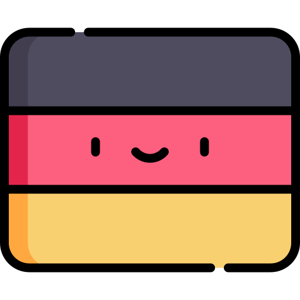

The German Language
Christine Yang, Yuezhen Chen, Ann Pan
What is German?
German is a West Germanic language of the Indo-European language family. This means that it's distantly related to other Indo-European languages like Spanish, Russian, Greek, and even Hindi, while it's more closely related to other Germanic languages such as Swedish, Dutch, and English. Today, German is spoken primarily in Germany, Austria, and Switzerland, with significant additional populations in South Tyrol (Italy), Belgium, and Liechtenstein.
The Influence of German
If we take a look at German vocabulary, it looks like German actually has a lot in common with English. Many words in English such as "house" sound very much like their German equivalent "Haus". These pairs of words are called cognates, meaning the words originate from some common root word. Take a look the following cognates that exist between English and German.
Friend
Hair
Knee
Milk
New
Son
False
House
Freund
Haar
Knie
Milch
Neu
Sohn
Falsch
Haus
The reason we see all these similarities is because English is a Germanic language just like German. When the Germanic Anglo-Saxon tribes migrated to Britain from northern Germany around the mid 5th to 7th centuries AD, they brought with them their Germanic language which would eventually become English. English then received a lot of influence from other languages such as French, Latin, and Greek in the centuries to come, but much of our English grammar is still recognizably Germanic and about 26% of our vocabulary is Germanic in origin. We can still see traces of our Germanic origins in many of the words we use today.
In addition to a shared origin with German, we also have a lot of loanwords in English taken directly from modern German vocabulary. German has many interesting words to express specific and relatable concepts that we don't have words for in English. Some of these words such as "zeitgeist" might sound familiar to you, because in fact English borrows a lot of words from modern German, especially when we lack the exact word ourselves. Check out some more interesting words German has to offer below.
Click the word to reveal the answer!
Learners of German
Today, German has become a very popular language around the world. There are about 85 million native speakers of German and 15 million non-native speakers. In Europe, German is the second most popular foreign language to learn after English, and it's particularly relevant in neighboring countries of Poland, France, and Russia.
Native German Speakers
German Grammar
While English and German may be historically related, there are many differences in the grammar of German that may pose difficulties for students of German. The Foreign Language Institute provides an overview categorizing the difficulty of learning foreign languages for native English speakers, and German is the only language in the "Category II" group, meaning it requires approximately 750 hours of study. This makes German easier to learn than languages like Russian and Indonesian, but harder than languages like French and Italian.
But what exactly makes German so difficult? Let's take a look at some of the major aspects of German grammar that differ from English.
Word Order
In English, our word order is relatively simple but very strict, meaning that if you change the order of the words, it changes the meaning of sentence. This is because in English the order of the words tells us how they function in the sentence. Other languages with a strict word order include Mandarin and Cantonese, while languages such as Russian, Greek, and Korean allow the words to move around more freely without changing the meaning of the sentence.
In German, the word order is somewhat strict, but in a very different way. While English word order follows the pattern of Subject + Verb + Object, the biggest rule for German word order is that the main verb must come second in the sentence. The other parts of the sentence can move around more freely, but the verb always has to be second.
For example, look at the word order in the following sentence. The main verb ("write") always stays in second position, while the other words can move around in the sentence. Unlike the English examples, in German no matter how you rearrange the other words in the sentence, the core meaning of the sentence stays the same.
"the author"
"writes"
"stories"
"for his friends"
This sentence is grammatically CORRECT
Meaning:The word order also gets more complicated when you introduce things like complementary infinitives, which must go at the end of the sentence, and subordinate clauses, which send the verb from second position to the end of the clause.
| Ich | möchte | in | meinem | Bett | schlafen |
| I | want | in | my | bed | to sleep |
| "I want to sleep in my bed." | |||||
| (complementary infinitive = "to sleep") | |||||
| Ich | sagte | ihr, | dass | ich | große | weiche | Kissen | mag |
| I | told | her | that | I | big | soft | pillows | like |
| "I told her that I like big soft pillows ." | ||||||||
| (subordinate clause in blue) | ||||||||
While these rules may seem straightforward at first, there are even more subtleties to German word order as you introduce more complicated constructions, and students of German must spend a lot of time practicing and getting used to this strange word order.
Noun Case
Another big part of German grammar is noun case. The idea of case might be unfamiliar to most English speakers, but it's actually quite common in other languages around the world such as Russian, Greek, Arabic, and Korean. Noun case is a way of indicating the role of a noun in the sentence (e.g. whether it's the subject, direct object, indirect object, etc.), and this is why German nouns are able to move around freely in the sentence without changing the core meaning of the sentence.
In German, there are 4 cases, and these cases are represented using different endings on articles (e.g. "the", "a"), adjectives, and sometimes the noun itself.
| Singular | Plural | |
| Nominative | das Buch | die Bücher |
| Genitive | des Buches | der Bücher |
| Dative | dem Buch | den Büchern |
| Accusative | das Buch | die Bücher |
Noun Gender
Every German noun also has one of 3 genders, either masculine, feminine, or neuter. The gender of the noun will change the case endings on the articles and adjectives that go with it. In German, grammatical gender is generally assigned based on how the noun sounds, and doesn't have a very tight link to actual gender. For example, we might expect "girl" to be feminine on the basis of the word's meaning, but in fact "Mädchen (girl)" in German is a neuter noun.
die Frau - woman
die Straße - street
die Ente - duck
die Menschlichkeit - humanity
die Einsamkeit - loneliness
die Kamera - camera
die Gemeinschaft - community
der Mann - man
der Lehrer - teacher
der Sommer - summer
der Optimismus - optimism
der Vogel - bird
der Feminist - feminist
der Komponist - composer
das Mädchen - girl
das Päckchen - small package
das Fräulein - young woman
das Buch - book
das Imperium - empire
das Datum - date
das Medikament - medicine
Can you find any patterns in the examples above that could help you figure out how to identify the gender of a German noun? Memorizing the gender for each noun is one of the big struggles for students of German, since there doesn't appear to be any obvious rule when you first look at them. Based on the examples above, could you guess the gender of the following German nouns?
laboratory
expressionism
freedom
friendship
politician
booklet
rose
tourist
fairytale
As you can see, it's really difficult to guess the gender of a German noun without memorizing it! However, if you take a closer look you find that there do appear to be some general patterns you could use to guess the gender of a noun. Most of these patterns have to do with the noun ending. We'll take a closer look at these patterns later.
Noun Plurals
In English, it's (usually) pretty simple to turn a singular noun into a plural noun -- you just add an "s". "Cat" becomes "cats" and "box" becomes "boxes". There may be some exceptions like "goose → geese" and "mouse → mice", but for the most part you can reasonably rely on the "s" rule to form a plural noun. In German however, there are a variety of ways to form plurals, and students of German often find it very difficult to memorize which plural forms go with which nouns. For example, here are some common ways to form plurals in German.
Adding "e"
der Hund → die Hunde (the dog → the dogs)
die Gans → die Gänse (the goose → the geese)
der Koch → die Köche (the chef → the chefs)
Adding an Umlaut
die Mutter → die Mütter (the mother → the mothers)
der Garten → die Gärten (the garden → the gardens)
Adding "n/en"
das Auge → die Augen (the eye → theeyes)
der Name → die Namen (the name → the names)
die Lehre → die Lehren (the doctrine → the doctrines)
No Change
der Onkel → die Onkel (the uncle → the uncles)
das Mädchen → die Mädchen (the girl → the girls)
Gender Patterns
Now let's take a look at what patterns we might find for determining the gender of German nouns. To do this, we identified a list of about 140 noun endings and plotted them to see which endings tend to take which grammatical gender.
Minimum count:
Plural Patterns
We can also do a similar kind of analysis for different plural formations in German nouns. Using the same list of about 140 singular noun endings, we can see which singular endings tend to take which plural endings in the Sankey diagram on the left.
Minimum count:
Using the tool above, we can see many of the common patterns found in German plurals. For example, if we click on the "e" singular ending on the left, we notice that most of these nouns are feminine and take the "n" plural ending. Similarly, if you click on the "ung" singular ending, we see that almost all of these words are feminine and take the "en" plural ending.
gemacht mit  in Boston
in Boston